1
1

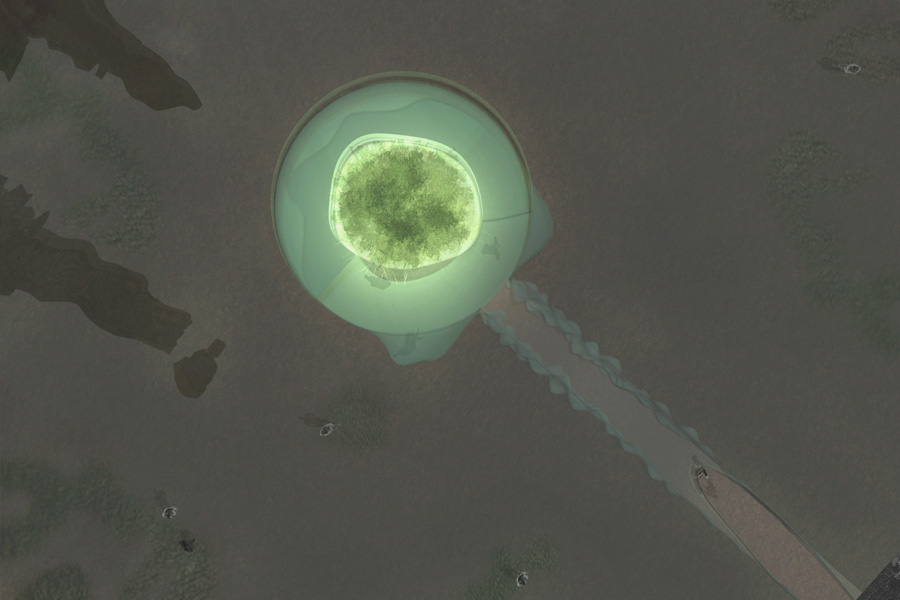
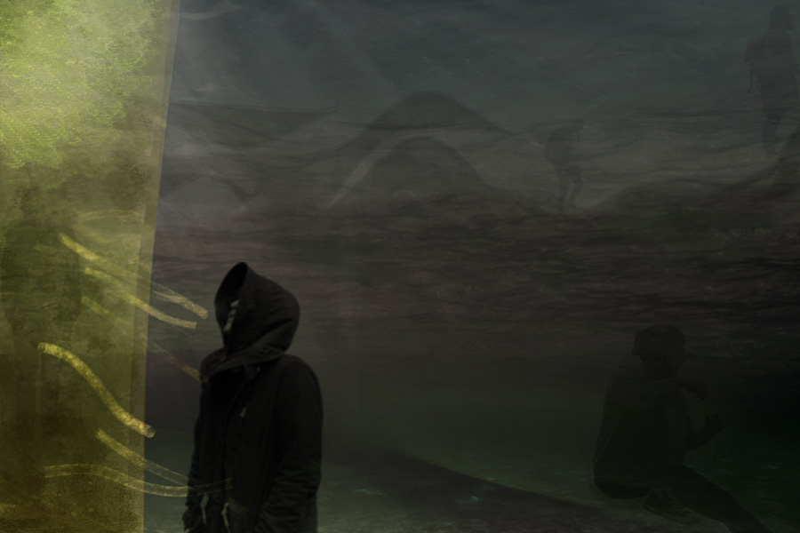
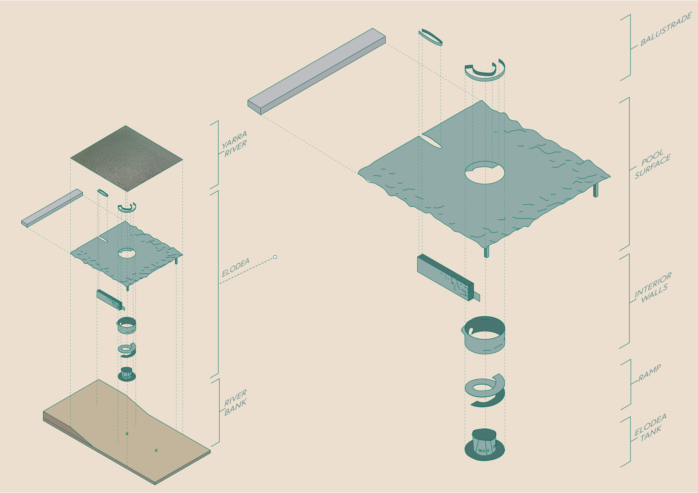
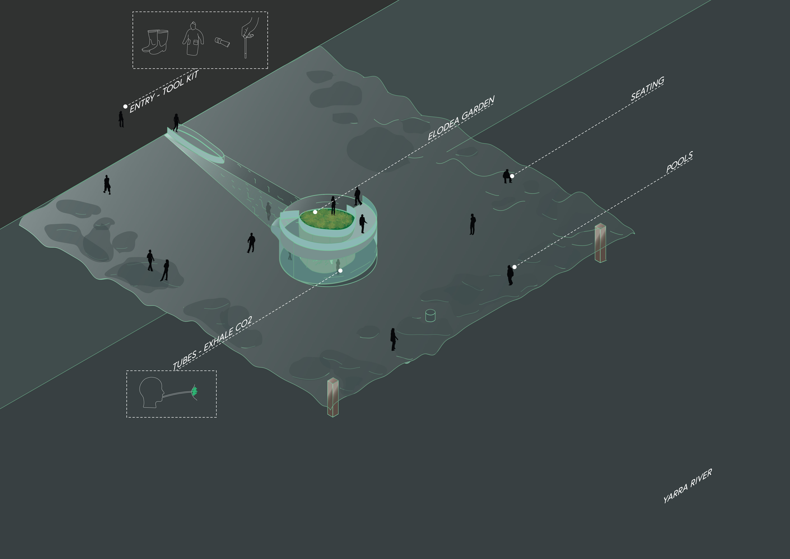
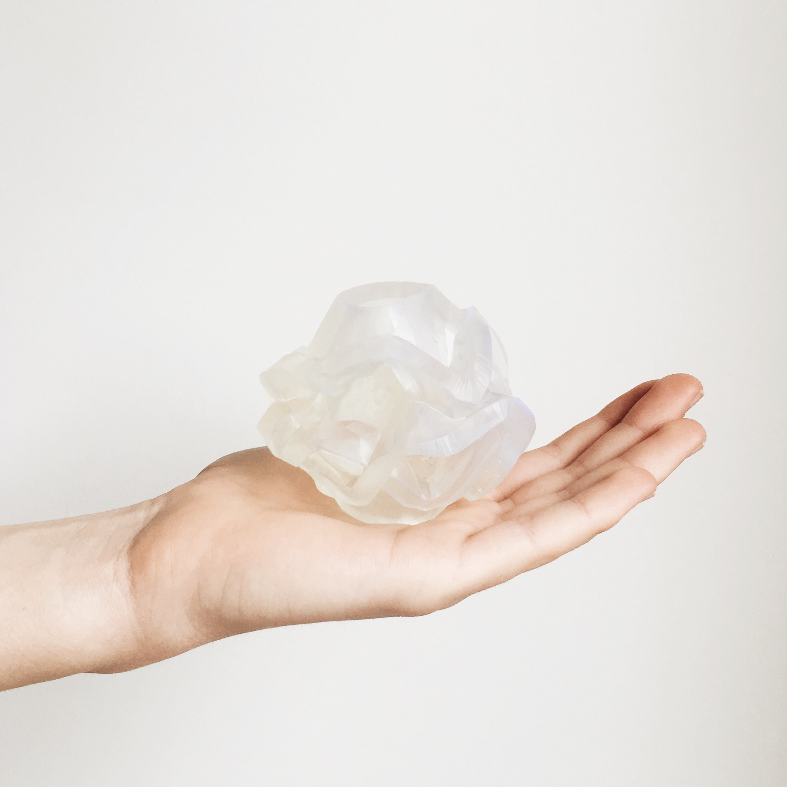
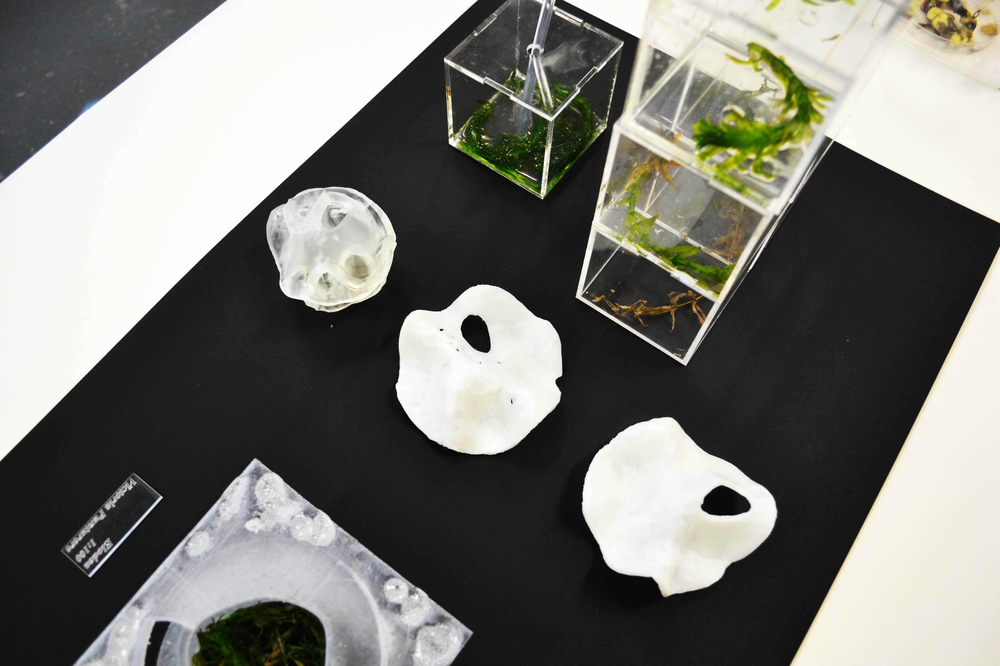
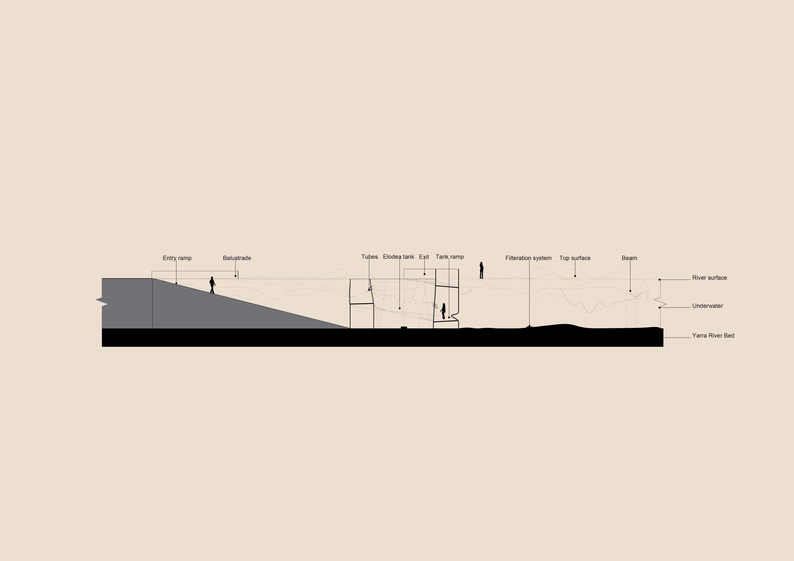
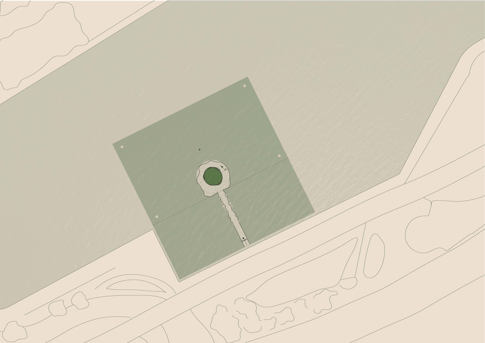
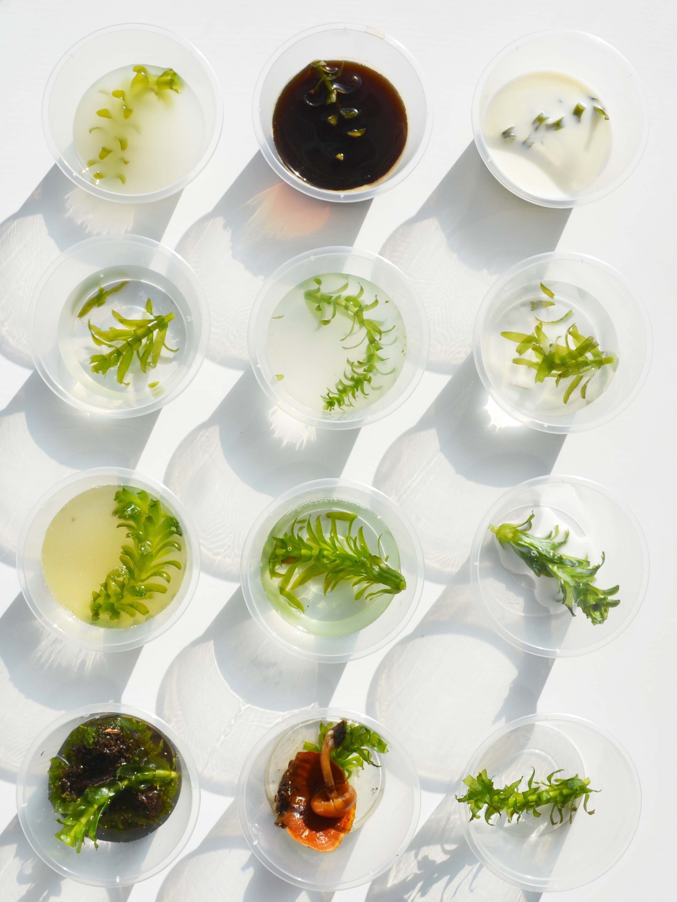
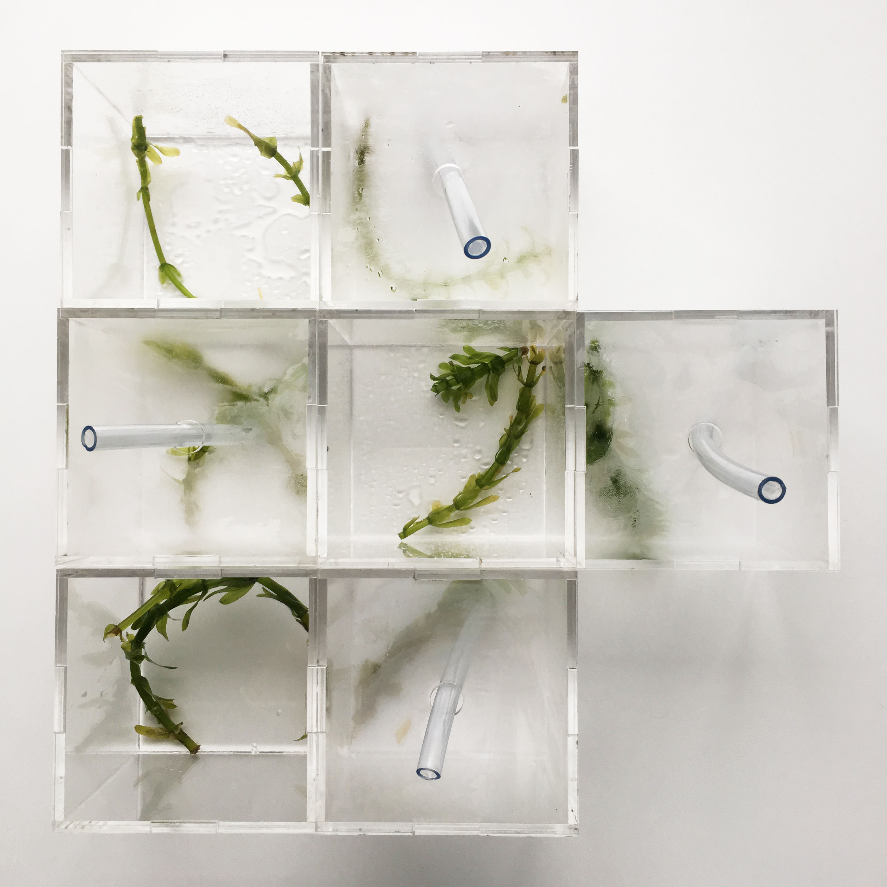
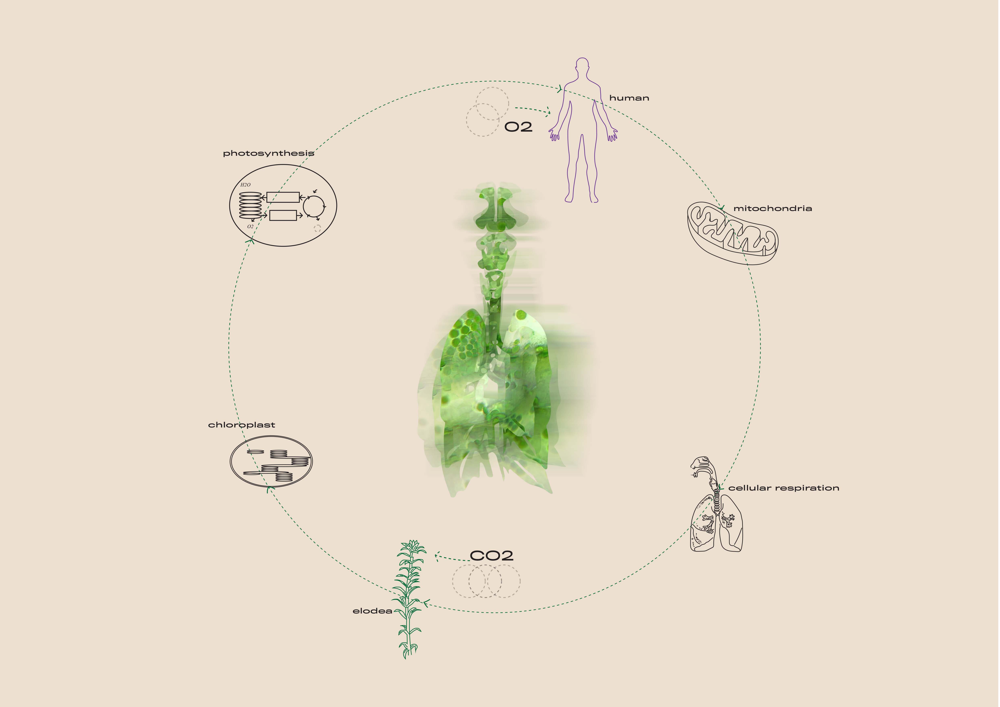
Elodea, 2017
This project explored the concept of biomimicry to design an architectural system that is modelled on a biological material and site of our own choice.
Named and modelled on the biological processes of the aquatic weed species ‘Elodea Canadensis’, Elodea is an architectural system that operates photosynthesis to assist in the restoration of the Yarra River and catchments. The Yarra River is heavily urbanising and as a result the river is degrading, altering the waterways form and water quality. Large amounts of storm-water enter Yarra river catchments resulting in high concentrations of copper, zinc, nitrogen and phosphorus and dissolved oxygen levels reducing water quality. Such high concentrations of these substances harms animals and plants in the water way.
Operating the formula of photosynthesis, the spatial program obtains carbon dioxide from inhabitants through cellular respiration, a water source from the Yarra River and natural sunlight to catalyse the process. Activated through human’s capacity to exhale carbon dioxide, elodea photosynthesises to function and process nutrients, metals and produce oxygen.
Elodea consists of 4 components; interactive filtration system, a ramp that spirals around the central tank, organic interior walls that form seating spaces and a top surface that echoes the microstructure of elodea forming plunge pools.
Visitors are provided with a tool kit that includes; gum boots, rain coat, mouth nozzle and water test kits.
All input combinations (of photosynthesis) were tested and experimented throughout the entire design process to observe the physical changes of the plant species, to thus determine the spatial and sensory qualities of the internal program. Throughout the process, it became evident that my role as designer allowed a limited control on the aquatic species and — thus, this lead me to creating a space that forms symbiotic connections with its occupants to function.
The design process and outcome utilised 3D printing technology to construct scaled prototypes of the architectural system.
Elodea constructs a symbiotic relationship between human and non-human by delivering an interactive and sensory experience of the microscopic process photosynthesis to simultaneously purify the Yarra River and Melbourne’s atmosphere.
Named and modelled on the biological processes of the aquatic weed species ‘Elodea Canadensis’, Elodea is an architectural system that operates photosynthesis to assist in the restoration of the Yarra River and catchments. The Yarra River is heavily urbanising and as a result the river is degrading, altering the waterways form and water quality. Large amounts of storm-water enter Yarra river catchments resulting in high concentrations of copper, zinc, nitrogen and phosphorus and dissolved oxygen levels reducing water quality. Such high concentrations of these substances harms animals and plants in the water way.
Operating the formula of photosynthesis, the spatial program obtains carbon dioxide from inhabitants through cellular respiration, a water source from the Yarra River and natural sunlight to catalyse the process. Activated through human’s capacity to exhale carbon dioxide, elodea photosynthesises to function and process nutrients, metals and produce oxygen.
Elodea consists of 4 components; interactive filtration system, a ramp that spirals around the central tank, organic interior walls that form seating spaces and a top surface that echoes the microstructure of elodea forming plunge pools.
Visitors are provided with a tool kit that includes; gum boots, rain coat, mouth nozzle and water test kits.
All input combinations (of photosynthesis) were tested and experimented throughout the entire design process to observe the physical changes of the plant species, to thus determine the spatial and sensory qualities of the internal program. Throughout the process, it became evident that my role as designer allowed a limited control on the aquatic species and — thus, this lead me to creating a space that forms symbiotic connections with its occupants to function.
The design process and outcome utilised 3D printing technology to construct scaled prototypes of the architectural system.
Elodea constructs a symbiotic relationship between human and non-human by delivering an interactive and sensory experience of the microscopic process photosynthesis to simultaneously purify the Yarra River and Melbourne’s atmosphere.